ECOVENT Operations
Enquiry to Dispatch — Admin Web Portal User Guide
ECOVENT AIR SYSTEMS INDIA LLP
Quality Ducts Is Our Business
Version 3.0 | 30 September 2026
Enquiry → Design → Order → Manufacture → Dispatch
Table of Contents
- Overview & Access
- User Roles
- End-to-End Workflow
- Navigation & Display Views
- Creating a New Enquiry
- Design & Accounts Workflow
- Production & Activity Log
- Order & Dispatch
- Screen Guide (with screenshots)
- Status Reference
1. Overview & Access
ECOVENT Operations is a browser-based portal for managing the full duct manufacturing lifecycle — from customer enquiry through design review, accounts approval, order confirmation, production, and multi-trip dispatch.
Key principle: Enquiry ≠ Order ≠ Dispatch
A customer enquiry captures intent and drawings. An order is created only after design approval. Each vehicle trip is a separate dispatch. One order can have many dispatch trips until fully delivered.
Open the URL provided by your administrator (e.g. https://your-server/login). Enter your username and password. Credentials are issued per user; they are not displayed on the login page. Use Sign out in the header when finished.
2. User Roles
Each login has one or more roles. Menus and records are filtered automatically.
| Role | Access | Typical tasks |
|---|
| Admin | Full portal | All modules, clients, users, settings |
| Supervisor | Full portal | Create enquiries, assign design, oversight |
| Designer | Assigned enquiries | Design review, Excel import, submit to accounts |
| Accounts | Enquiries (approval) | PO workflow, approve design, return to design |
| Production | Orders | Production approval and progress |
| Dispatcher | Mobile app only | Field dispatch (see Mobile Dispatch guide) |
Activity history records the signed-in user for every action (not a separate “acting as” selector).
3. End-to-End Workflow
1New Enquiry — supervisor/admin selects client & project, uploads customer files.
2Accept & assign design — intake completed; design engineer assigned (designer inbox).
3Design review — duct extraction, Excel import, revisions (Rev 01, 02…); submit to accounts.
4Accounts / PO — review and approve design for manufacturing.
5Convert to order — production order linked to the enquiry.
6Production & dispatch — shop floor progress; one or more vehicle trips until balance is zero.
Every step appears in Delivery & Activity History with user name, role, timestamp, and revision/trip where applicable.
4. Navigation & Display Views
| Menu | Who | Purpose |
|---|
| Dashboard | Admin, Supervisor | KPIs, work queue, workflow audit |
| Clients | Admin, Supervisor | Customers, projects, contacts |
| Enquiries | Most office roles | Pipeline by stage; designers see assigned items |
| Orders | Admin, Supervisor, Production | Manufacturing and dispatch readiness |
| Dispatch | Admin, Supervisor | All vehicle trips (desktop) |
| Settings | Admin | Application information |
Toolbar Actions (per screen)
| Screen | Actions |
|---|
| Dashboard | All Enquiries · New Enquiry · Create Dispatch (when ready) |
| Enquiries | New Enquiry |
| Orders | Create Dispatch (first dispatchable order) |
| Dispatch | New Dispatch Trip |
Display Views
On Enquiries, Orders, and Dispatch lists, switch between Cards, Grid, and Kanban. Your preference is saved in the browser.
Header
Notifications (bell) and user menu (name + sign out) are in the top bar on every screen.
5. Creating a New Enquiry
Admin / Supervisor: click New Enquiry from the Dashboard or Enquiries screen. Select an existing client and project from the directory (or add clients under Clients first).
Customer & contact
| Field | Required | Description |
|---|
| Client / project | Yes | From client master data |
| Contact | Optional | Site contact from client record |
Project Details
| Field | Required | Description |
|---|
| Project Name / WO No | Yes | e.g. AIRMASTER-WO-900 — becomes order reference |
| Project Location | Yes | Site or city |
| Enquiry Date | Yes | Date enquiry received |
| Expected Completion | No | Target delivery date |
Assignment
| Field | Required | Description |
|---|
| Sales Person | Yes | Assigned sales representative |
| Priority | Yes | Low / Normal / High / Urgent |
| Source | No | Existing Customer, Referral, Website, etc. |
| Remarks | No | Scope notes, urgency, site constraints |
Client input files
Upload customer drawings (PDF, images, Excel, etc.) on the create form or on the enquiry detail page. On submit:
- Generates a structured enquiry number (client + project sequence)
- Logs Enquiry created and file upload in activity history
- Opens the enquiry detail page for intake and design handoff
Important: No manufacturing order is created when the enquiry is submitted. The order is created only after design approval and explicit conversion.
6. Design & Accounts Workflow
The workflow stepper shows Enquiry → Design Review → Order → Manufacturing → Dispatch.
Supervisor / intake
Accept & assign to design completes intake and assigns the design in-charge in one step.
Designer
- Import duct schedule (Excel) or enter extraction totals
- Request revision (during in-review) if scope changes
- Submit to accounts when engineering sign-off is ready
Accounts
- PO for review → PO for approval
- Approve design or Return to design (new revision)
Then Convert to order when design is approved.
7. Production & Activity Log
Production steps (on enquiry or order detail)
- Approve Production Start — production manager authorises shop floor to begin (logged with name and date)
- Log Production Update — record produced quantity (e.g. 12 / 18 qty)
- Mark Ready for Dispatch — all items moved to ready stock
Activity history
The Delivery & Activity History section groups all events by phase:
| Phase | Example events |
|---|
| Enquiry | Enquiry created |
| Design | Design review started, design updated, revision requested, design approved |
| Order | Converted to order |
| Production | Production start approved, progress updated, marked ready for dispatch |
| Dispatch | Dispatch Trip 1 created, Dispatch Trip 2 created, delivery completed |
Each entry shows: action title, detail, actor name, role, timestamp, and revision/trip number where applicable.
The Workflow Progress summary strip shows the latest update per phase at a glance.
8. Order & Dispatch
Quantity tracking
| Metric | Meaning |
|---|
| Ordered | Total on confirmed order |
| Produced | Fabricated quantity |
| Ready Stock | Available for dispatch |
| Dispatched | Already sent on previous trips |
| Balance | Remaining to dispatch |
Dispatch workflow
- Select order from Dashboard, Orders, or Enquiry detail
- Select items — use + / − per tag or Select All Available
- Enter vehicle details — vehicle number, driver, transporter, date/time
- Preview — verify quantities, area, and remaining balance
- Confirm — dispatch number assigned, balances updated, activity logged as Dispatch Trip N
- Share — WhatsApp, email, or PDF dispatch note
Rules: Cannot dispatch more than available per tag. Order becomes Fully Dispatched when balance reaches zero.
9. Screen Guide
Screenshots from the current teal-themed portal. Role badges show separate logins (admin, designer, accounts, production) — each user sees only permitted menus and data.
Login — per-user username and password (issued by administrator)

Admin
Dashboard — KPIs, work queue, and workflow audit (admin / supervisor)
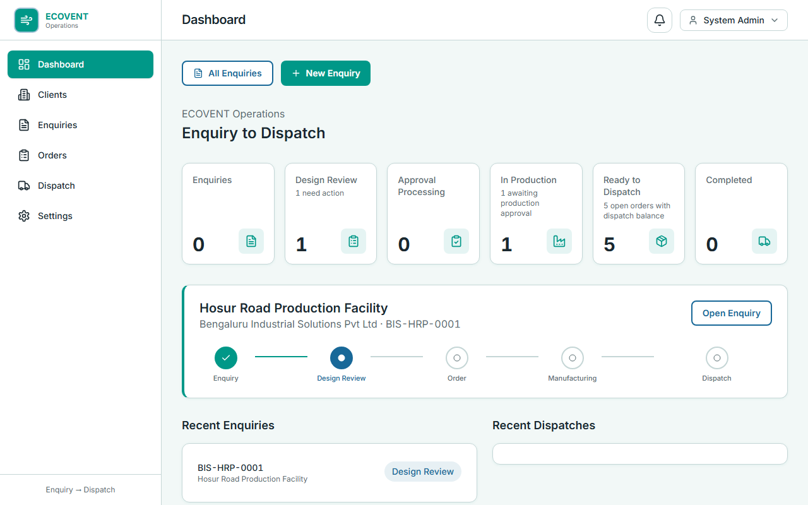
Admin / Supervisor
Clients — customers, projects, and contacts master data
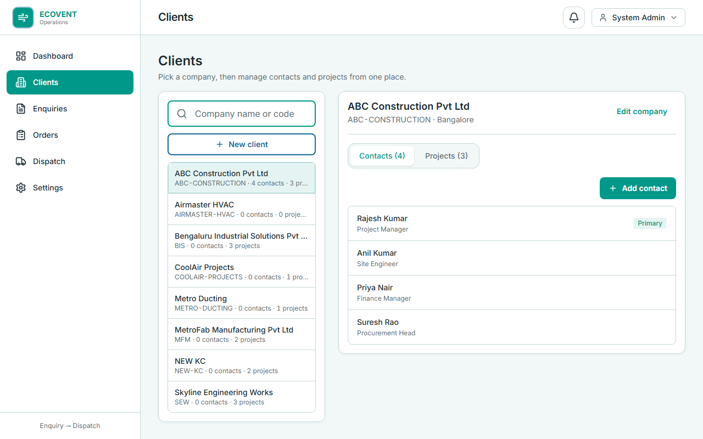
Admin / Supervisor
Enquiries — all stages; card, grid, or kanban views
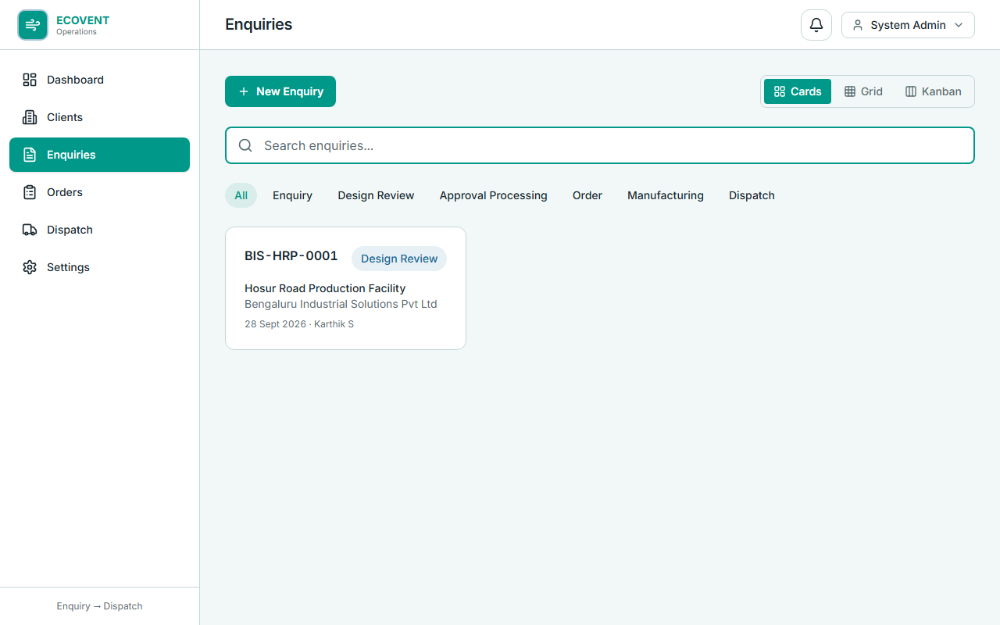
Supervisor
New enquiry — client & project, file upload, person in charge
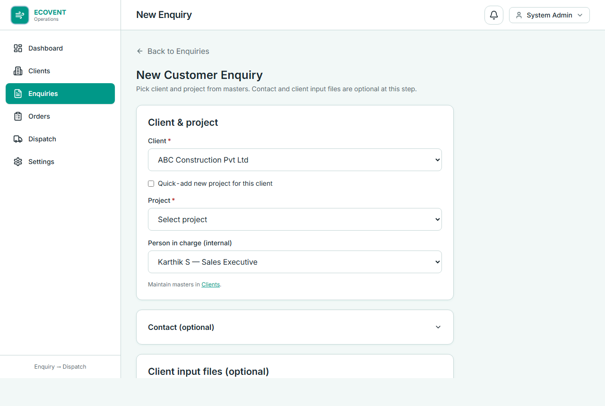
Admin / Supervisor
Enquiry detail — workflow stepper, accept & assign design, files, actions

All roles
Activity history — logged-in user name on every handoff
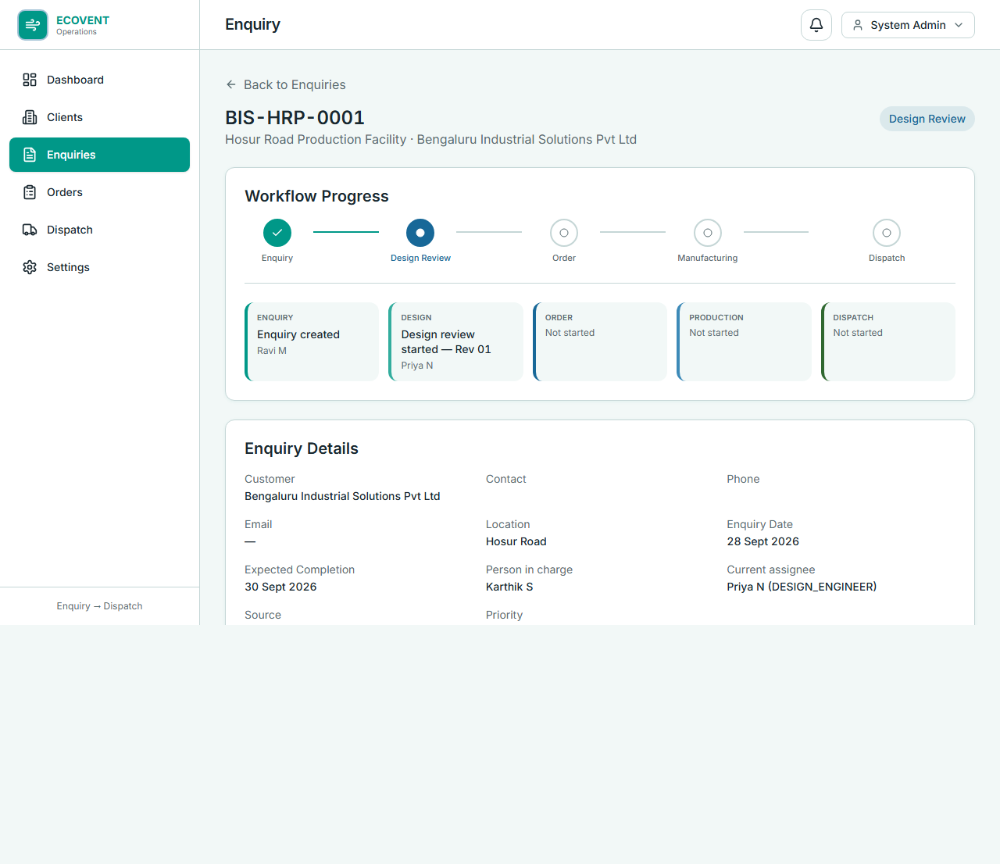
Designer
Designer inbox — only enquiries assigned as design in-charge
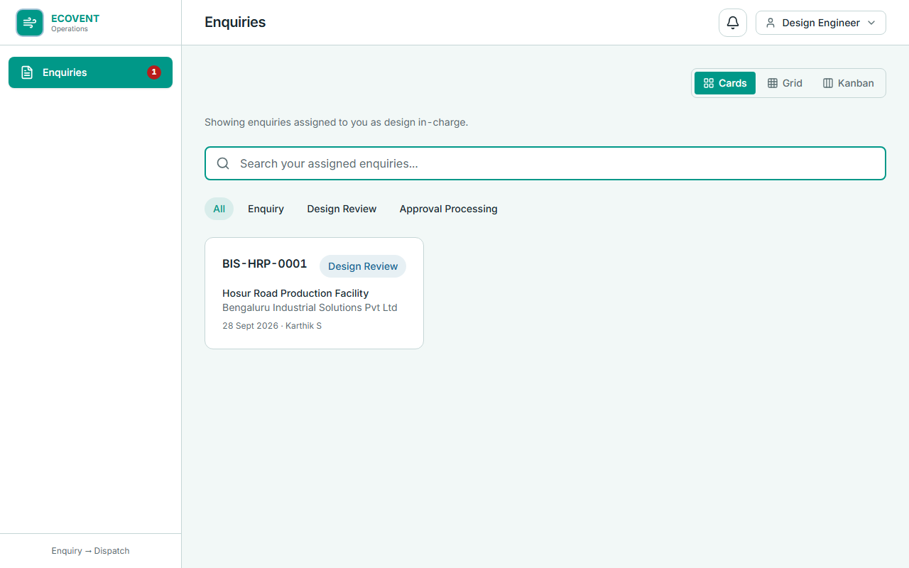
Accounts
Accounts view — approval processing and PO workflow stages
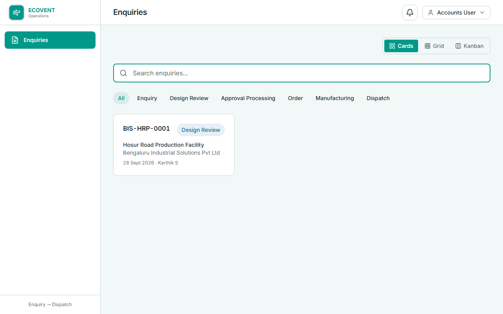
Production
Orders — manufacturing status and production actions
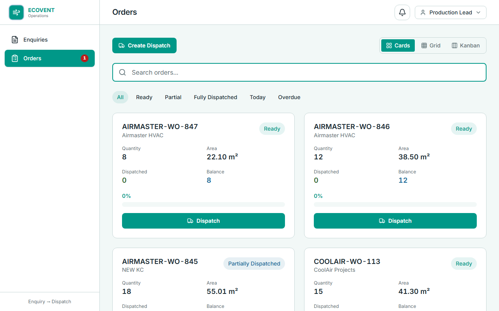
Production
Order detail — production approval, progress, dispatch trips
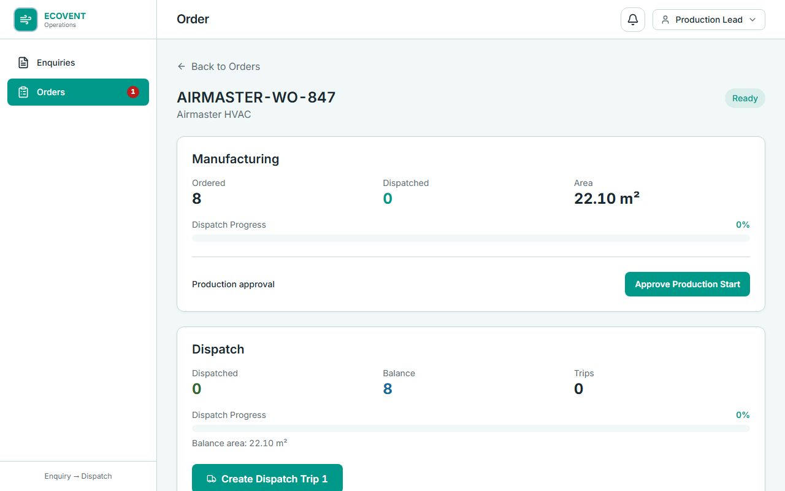
Admin
Create dispatch — + / − quantity per duct tag
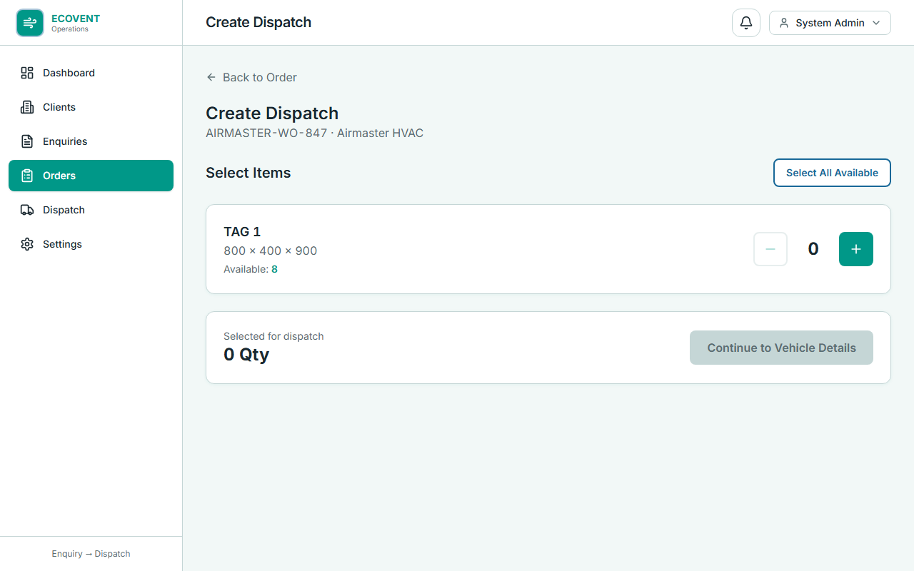
Admin
Vehicle details — driver, transporter, and loading information
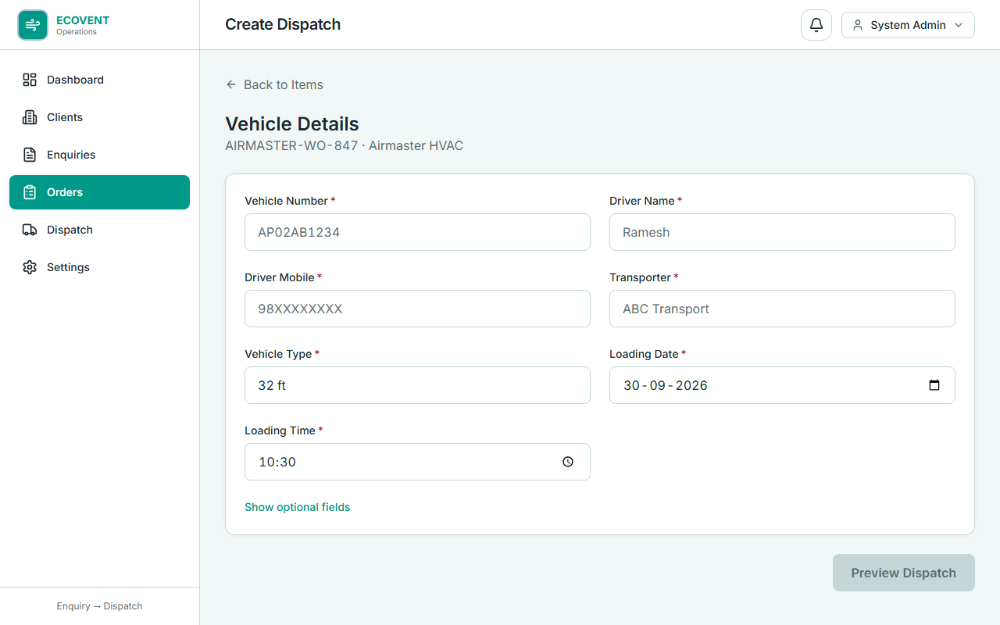
Admin
Dispatch preview — review quantities before confirming trip
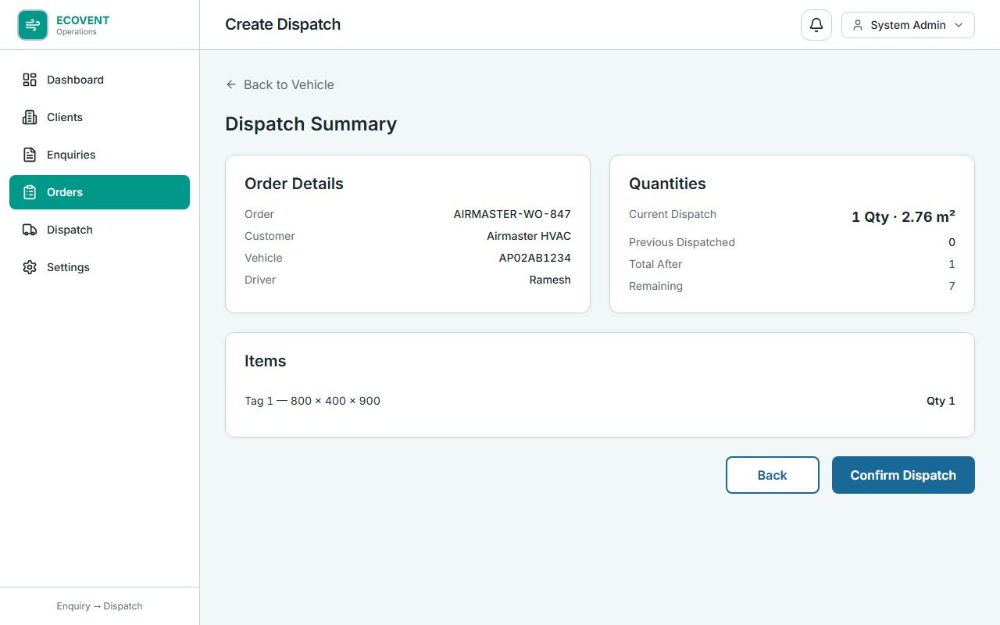
Admin
Dispatch history — all vehicle trips across orders
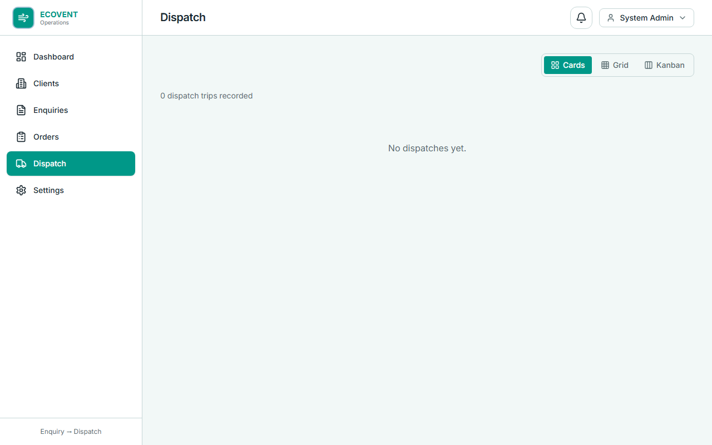
Admin
Settings — application information
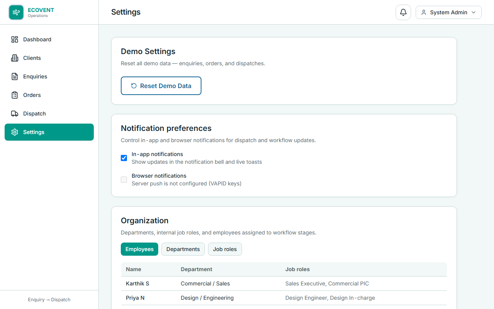
10. Status Reference
Order Status Badges
| Status | Colour | Meaning |
|---|
| Production | Orange | Manufacturing in progress |
| Ready | Blue | Stock ready — awaiting first dispatch |
| Partially Dispatched | Orange | Some qty sent, balance remains |
| Fully Dispatched | Green | All qty dispatched — complete |
Enquiry Stages
| Stage | Meaning |
|---|
| Enquiry | New — awaiting design review |
| Design Review | Engineering extraction in progress or revision |
| Order | Converted — production not yet started |
| Manufacturing | Production in progress |
| Dispatch | Ready or partially dispatched |
| Completed | Fully dispatched |